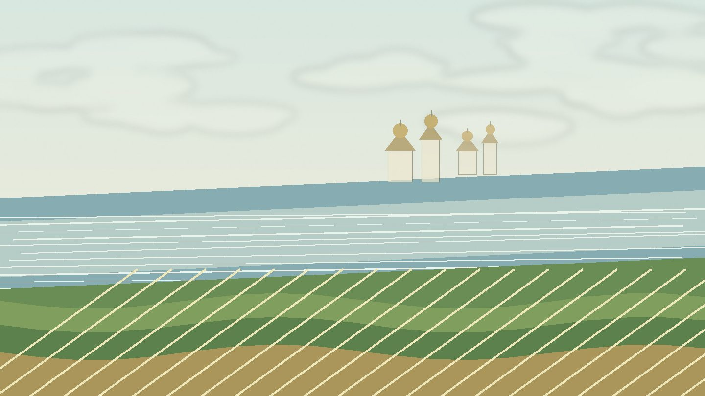

Главная / Ярославская область

Ярославская область
Что посадить
Что посадить
в Ярославской
области
Выберите часть области и перейдите к культурам, которые лучше подходят для вашего участка: северо-западным лесам у Рыбинского водохранилища, центральной волжской зоне или южному ополью и озёрному краю.
Влажная лесная зона с более прохладным стартом сезона: ставка на корнеплоды, капусту, зелень и зимостойкие ягодники.
Выбрать раздел → Центральная волжская зонаУниверсальная зона для сада, огорода, цветов и полезных растений: внутри — выбор из четырёх отдельных справочников.
Открыть страницу зоны → Южное ополье и озёрный крайСамая перспективная часть области для плодового сада и тёплых гряд, но у озёр нужно учитывать туманы и низины.
Открыть страницу зоны →